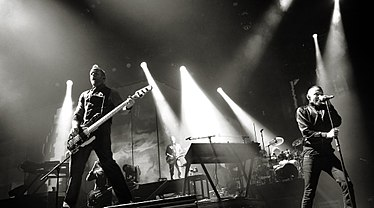

Descripcion
Linkin Park es una banda estadounidense de rock alternativo procedente de Agoura Hills,
California. Formada en 1996, el grupo estuvo inicialmente integrado por Mike Shinoda,
Dave Farrell, Joe Hahn, Brad Delson, Rob Bourdon y Mark Wakefield, este último como voz
principal.
La banda inició en ese mismo año sus primeros trabajos musicales de manera independiente y
posterior a esto grabaron su primer material llamado Xero; sin embargo no tuvieron gran éxito en
la búsqueda de un sello discográfico ya que nadie mostró interés por su trabajo, lo que ocasionó
la renuncia de Mark Wakefield.2 Poco después, Chester Bennington se incorporó a la banda como vocalista;
el grupo realizó su primera presentación en un club de Los Ángeles y siendo respaldados por Jeff Blue,
en aquel entonces vicepresidente de Warner Bros. Records, lograron firmar con el sello en 1999. El nombre
del grupo es un juego de palabras que hace referencia al Lincoln Park en Santa Mónica.